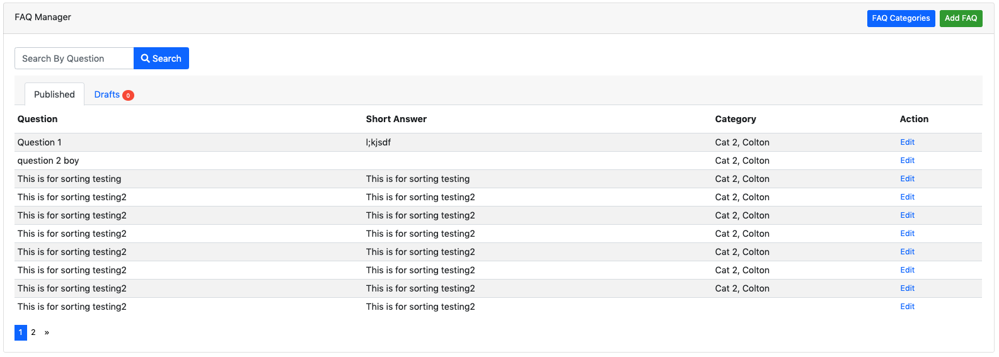
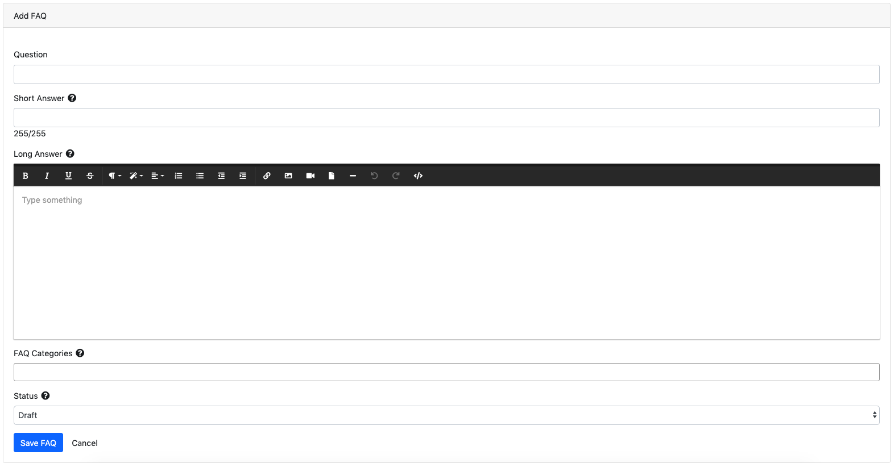

Welcome to Dynamo’s documentation!¶
{kind=link}
When you want to use a package but it doesn’t have good documentation...

What is Dynamo?¶
Dynamo is a package you can use in your existing Laravel application to quickly build admins using real database tables. You may be familiar with php artisan which allows you to create models, views, and controllers, and migration files with some scaffolding.
Dynamo does this, as well as generating the forms for creating the models. For an example, see the screenshots below showing a form on the backend of the website for the administrator to use to create Faqs. Click the images to enlarge them!
 {kind=link}
{kind=link}
Dynamo allows you to create a controller, model, migration, and route for your admin with one command:
php artisan make:dynamo Employee
After running this you will notice an autogenerated route in your routes->web.php file. You will notice a new database migration has been created in your database->migrations directory. You will notice a new model made in your app directory. You will notice a new Dynamo Controller in your controller directory. By default the controller directory is set in your config file:
'controller_namespace' => 'App\Http\Controllers',
'controller_path' => app_path('/Http/Controllers'),
Need to opt out of some of the Dynamo magic?
php artisan make:dynamo Employee --migration=no --model=no --controller=no --route=no
I recommend starting out with the quick-start video below to see what Dynamo is capable of doing and seeing if it is right for you. If you see that it is right for you, you can install Dynamo by running:
composer require jzpeepz/dynamo